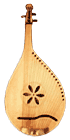
Bandura (Бандура): Украинский многострунный народный инструмент. Первые упоминания о бандурах относятся к XV веку, у инструмента было 7-20 струн. По форме бандура относится к лютням, по способу игры и расположению струн - к гуслям.Струны расположены двумя группами: басовые натянуты над шейкой и основные, приструнки,- над правой стороной деки. Звук извлекается щипком, часто посредством плектра.
Вместе с кобзой бандура была основным инструментом кобзарей, странствующих поэтов-сказителей, исполнявших знаменитые думы.
Baglama: Один из наиболее важных струнных иструментов Турции, baglama представляет собой лютню с длинным грифом и грушевидным корпусом. Размеры инструмента варьируются, как и количество струн. Как правило, есть одна-две жужжащие струны, из которых извлекают звук плектром. Такие исламские секты, как Bektasi, Alevi и Kizilbas, используют baglama в качестве единственного музыкального инструмента на своих религиозных церемониях.
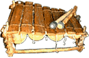
Западно-африканский предок ксилофона. Инструмент собран из скрепленных деревянных брусков увеличивающейся длины и полых gourds разного размера, закрепленных снизу, благодаря которым добиваются потрясающего тонального диапазона. Существуют различные модификации, например, marimba в Мозамбике.Batá:
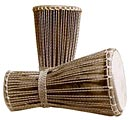
Семейство из трех двух-головочных нигерийских барабанов в форме песочных часов. Каждый ilu (барабан) имеет свое название: меньший - okonkolo, затем itotele и самый большой bata ilu - iya.Согласно традиции в bata живет сверх'естественная сущность, называемая aña. Чтобы ее накормить, необходимо приносить в жертву пищу и животных. Барабанщик не имеет власти над aña.
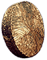
Bendir: Рамочный барабан севера Африки, особенно региона Восточных Берберов. Алжирские и мароканские оркестры, исполняющие как современные, так и традиционные музыкальные формы, обычно имеют пару инструментов в своем составе.Bendir представляет собой скрученный деревянный кусок, длиной 40-50 см, с натянутой тугой кожей. Играют на нем руками.
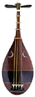
Biwa: Традиционная японская разновидность лютни, пришедшая в VII веке из Китая. Корпус овальный, почти плоский с тремя отверстиями спереди, на грифе пять высоких ладов. Струны из шелка, склееного рисовым клеем, натянуты достаточно свободно - понятие строя инструмента весьма условно. Звук извлекают треугольным деревянным медиатором, по форме напоминающим небольшой веер.На протяжении веков роль бива в японской культуре менялась радикально. Наиболее известная ее реинкарнация - Сацума бива (XVI) - была призвана воспитывать самурайский дух, выступая в роли ведущего аккомпанимента исполнителям героических поэм и сказаний. Сегодня инструмент находится на родине в относительном забвении...
Тут можно узнать о бива много интересного.
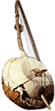
Bolon: Самый древний африканский арфообразный инструмент. От этого простого 3х струнного баса возникли 9ти струнный daN и 17ти струнный soron, бывшие уже прямыми предшественниками kora. Kamele ngoni региона Wassoulou также происходит от bolon.Исторически bolon изготавливался из gourd и скрученных веток. Корпус-резонатор мог служить барабаном. Народностью Malinke инструмент использовался для воодушевления солдат перед боем.
Mory Kante, давший жизнь bolon в современных ансамблях, превратил оригинальный инструмент в 5ти струнный.
Bongo: Кубинское название для целого ряда небольших афро-кубинских барабанов, один из которых и есть bongo. Два небольших барабана соединены вместе деревянной перегородкой. Кожа с'емная, и для поддержания строя bongocero необходимо использовать удерживаемый ногами небольшой угольный медник.
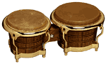
Исполнитель обычно играет сидя, держа bongo между коленями.В 20 годы bongos были настроены ниже, чем сегодня, и техника игры была ближе манере игры на сonga с tabla-подобным изменением высоты тоны. Строй современных bongo больше соответствует их лидирующей роли в Латинской Ритм-Секции. Современная техника игры базируется на технике ударов, называемой Martillo. Bongo исполнитель также дублирует ритм с помощью cowbell, который используется в течение части Montuno, в которой интенсивность ритма и громкость резко увеличиваются.
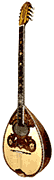
Bouzouki: Культовый греческий струнный инструмент. Название происходит от турецкого слова bozuk, которое обозначало как стандартный размер saz, так и стандартную настройку инструмента, используемую и по сей день. Ранние версии были 6-струнные, затем появились 8-струнные, причем обе эти разновидности существуют и сегодня. Уменьшенная версия инструмента называется baglama, но отличается от турецкого аналога.Популярность bouzouki резко выросла в период расцвета стиля rembetika в 20-40х прошлого века. В 60х появились электрифицированные инструменты.
Box guitar: акустическая гитара.
Bandoneon: Подлинная душа музыки танго. Несмотря на то, что бандонеон уже перешел в разряд народных инструментов,
Конструктивно бандонеон представляет собой язычковый пневматический музыкальный инструмент, разновидность концертины. Первые были диатонические, затем - хроматические.
Всемирный интерес к бандонеону в наши дни связан с музыкой игравшего на нем Astor Piazzolla.
Bagpipe/Волынка: Национальный духовой музыкальный инструмент Шотландии.
Подобные волынке инструменты существуют во многих европейских странах и странах бывшего Союза. В России, Белоруссии и на Украине наиболее распространена дуда.
Балалайка/Balalaika: Русский народный трех-струнный щипковый инструмент с характерной треугольной формой корпуса.
В конце XIX В.В.Андреев усовершенствовал балалайку, создав целую семью инструментов разной величины: приму, секунду, альт, бас и контрабас. Подвижные лады были заменены на фиксированные металлические, появилось понятие строя. Тогда же были созданы первые чисто балалаечные оркестры до 14 исполнителей.
Наряду с водкой, медведями и матрешками балалайка является национальным символом России.
Berimbau: Бразильский струнный инструмент, пришедший из Африки (наиболее вероятная родина - Ангола). В Bahia berimbau развился из сольного в ансамблевый инструмент, используемый в публичных исполнениях capoeira и samba.
Ритм capoeira на berimbau звучит вначале как чередование двух основных оттенков: высокая нота, производимая нажатием монеты или камешка на струну,(остановленный звук) и низкая нота на открытой струне (чистый звук). Есть и третий оттенок, "жужжание", который появляется, если слегка ударять струну монетой. Практически, музыкант держит этот гудящий бас, переходя от него к высоким или низким нотам, создающим паттерн.
Звук berimbau часто сравнивают со стоном рабов, стремившихся на свою африканскую родину.
Bodhran: Традиционный ирландский рамочный барабан.
Поверхность bodhran часто украшают сложными орнаментами, превращая его в произведение искусства.
Bonang: Индонезийский ударный инструмент, cостоящий из набора шишкообразных гонгов, расположенных горизонтально в двухрядной стойке. Наборы гонгов в зависимости от размера, строя и количества представляют несколько различных семейств. Названия этих наборов зависят как от их конструкции, так и от роли выполняемой в ансамбле; наиболее известные - kenong, canang, caklempong, engkeromong и kulintangan.
Звук извлекают специальными палочками.
Box drum:
Бызанчи/Byzaanchi: Тувинский струнный инструмент, родственный erhu. Корпус - полый, изготавливается из бычьего рога, дерева или легкого металла. У инструмента четыре струны, волос смычка продевают между струнами.
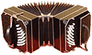
имя его создателя сохранилось в истории. В декабре 1850 Heinrich Band выставил на продажу в своем магазине в Крефельде, Германия первые созданные им образцы. Затем с потоком иммигрантов бандонеон оказался в Буэнос-Айресе и там началась его настоящая история...Конструктивно бандонеон представляет собой язычковый пневматический музыкальный инструмент, разновидность концертины. Первые были диатонические, затем - хроматические.
Всемирный интерес к бандонеону в наши дни связан с музыкой игравшего на нем Astor Piazzolla.
Bagpipe/Волынка: Национальный духовой музыкальный инструмент Шотландии.
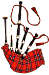
Состоит из нескольких трубок, вделанных в мешок из кожи или пузыря, служащий резервуаром воздуха. Мелодичные трубки обычно снабжены одинарной тростью и боковыми отверстиями. Одна трубка - бурдонная - воспроизводит непрерывно звучащий бас на тонике или тонической квинте. При игре исполнитель держит инструмент у груди или под мышкой.Подобные волынке инструменты существуют во многих европейских странах и странах бывшего Союза. В России, Белоруссии и на Украине наиболее распространена дуда.
Балалайка/Balalaika: Русский народный трех-струнный щипковый инструмент с характерной треугольной формой корпуса.
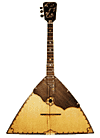
Старинная балалайка имела 2 струны и не имела ладов. Появилась в XIIX веке, постепенно вытеснив домру.В конце XIX В.В.Андреев усовершенствовал балалайку, создав целую семью инструментов разной величины: приму, секунду, альт, бас и контрабас. Подвижные лады были заменены на фиксированные металлические, появилось понятие строя. Тогда же были созданы первые чисто балалаечные оркестры до 14 исполнителей.
Наряду с водкой, медведями и матрешками балалайка является национальным символом России.
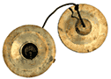
Bat (Nao bat, Chum choe): Вьетнамские цимбалы. Представляют собой два соединенных диска из сплава меди и жести (реже серебра). Исполнитель держит их за ручки в центре дисков, одновременно танцуя.Berimbau: Бразильский струнный инструмент, пришедший из Африки (наиболее вероятная родина - Ангола). В Bahia berimbau развился из сольного в ансамблевый инструмент, используемый в публичных исполнениях capoeira и samba.
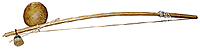
Бразильский berimbau состоит из деревянного шеста около 56 дюймов длиной, согнутого единственной металлической струной с gourd-резонатором, связанным с одним концом шеста и струны. Лук держат в левой руке, а правой ударяют по струне небольшой палкой. В правой руке также небольшая погремушка caxixi. Между большим и указательным пальцем левой руки, исполнитель держит монету или камешек, которым останавливает струну.Ритм capoeira на berimbau звучит вначале как чередование двух основных оттенков: высокая нота, производимая нажатием монеты или камешка на струну,(остановленный звук) и низкая нота на открытой струне (чистый звук). Есть и третий оттенок, "жужжание", который появляется, если слегка ударять струну монетой. Практически, музыкант держит этот гудящий бас, переходя от него к высоким или низким нотам, создающим паттерн.
Звук berimbau часто сравнивают со стоном рабов, стремившихся на свою африканскую родину.
Bodhran: Традиционный ирландский рамочный барабан.
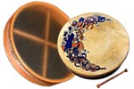
Звук извлекают небольшой палочкой с двумя головками, называемой tipper; более старая техника игры только руками сейчас встречается редко. В ирландских пабах иногда попадаются инструменты с прикрепленными к раме колокольчиками.Поверхность bodhran часто украшают сложными орнаментами, превращая его в произведение искусства.
Bonang: Индонезийский ударный инструмент, cостоящий из набора шишкообразных гонгов, расположенных горизонтально в двухрядной стойке. Наборы гонгов в зависимости от размера, строя и количества представляют несколько различных семейств. Названия этих наборов зависят как от их конструкции, так и от роли выполняемой в ансамбле; наиболее известные - kenong, canang, caklempong, engkeromong и kulintangan.
Звук извлекают специальными палочками.
Box drum:
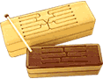
Общее название для особой разновидности прямоугольных барабанов, также называемых slit drum, tongue drum или osi drum. Обычно такой инструмент представляет собой систему щелей разной длины, вырезанных в ящике. Играют деревянным молотком, и хорошо настроенный инструмент может издавать очень мелодичный звук.Бызанчи/Byzaanchi: Тувинский струнный инструмент, родственный erhu. Корпус - полый, изготавливается из бычьего рога, дерева или легкого металла. У инструмента четыре струны, волос смычка продевают между струнами.